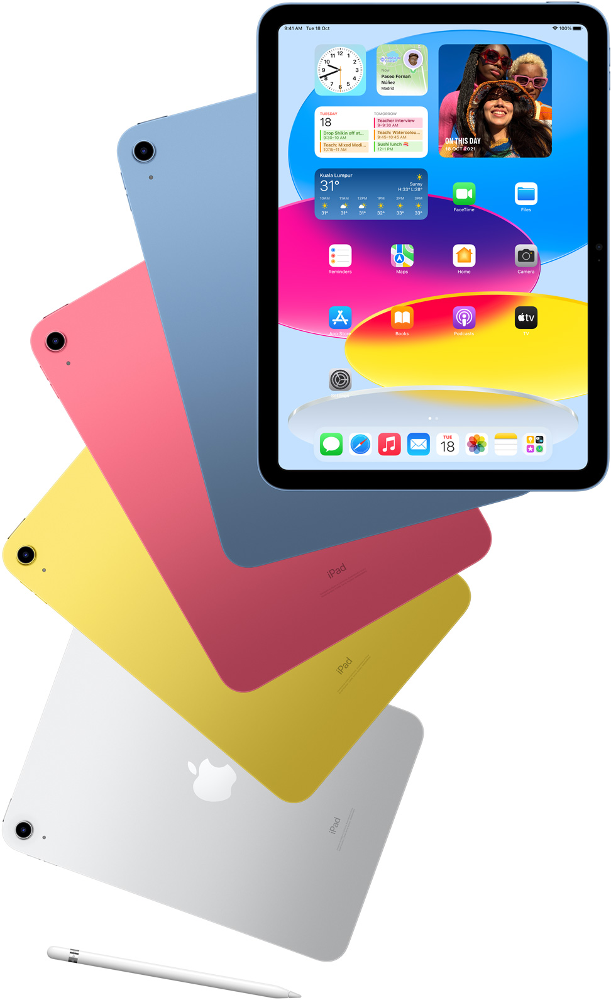
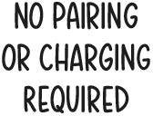

<section class="mt-[181px]">
  <div class="section-content max-medium:section-content-1068 max-small:section-content-734">
    <h2 class="design-title max-medium:ml-[8.3333333333%] max-small:basis-full max-small:max-w-full max-medium:basis-5/6 max-medium:max-w-5/6">
      Meet the <br> redesigned iPad.
    </h2>
    <div class="row mb-[27px] z-[1] relative">
      <div class="design-description box-border basis-full max-w-full max-small:basis-full max-small:max-w-full max-medium:basis-5/6 max-medium:max-w-5/6 max-medium:ml-[8.3333333333%]">
        <p class="description-text ">
          The all-new iPad is colourfully reimagined to be more capable, more intuitive and even more&nbsp;fun. With a new
          <strong class="text-black">all‑screen design,</strong>
          10.9-inch Liquid&nbsp;Retina&nbsp;display and four&nbsp;gorgeous colours, iPad delivers a powerful way to get things done, create and stay connected.
          <sup class="top-auto relative text-[1em]"><a >1</a></sup>
          Add on essential accessories designed just for iPad and enjoy endless versatility for everything you love to&nbsp;do.
        </p>
      </div>
      <div class="hardware-picture">
        <picture class="fan-image">
          
        </picture>
        <picture class="fan-text-1">
          
        </picture>
        <picture class="fan-text-2">
          
        </picture>
      </div>
    </div>
    <div class="row section-accessories items-start mb-[212px] max-1068:mb-[107px] max-734:mb-[97px]">
      <div class="box-border min-w-0 basis-8/12 max-w-8/12 max-medium:basis-7/12 max-medium:max-w-7/12 max-small:basis-full max-small:max-w-full hardware-video-container">
        <div class="video-box">
          <video appElementIsIn (visibilityChanged)="onVideoTwoIn($event)" #videoOne>
            <source src="../../../../../assets/images/design_one_large.mp4" type="video/mp4">
          </video>
        </div>
      </div>
      <div class="accessories-description max-1068:mt-[-3px] max-734:mt-[14px] box-border basis-1/3 max-w-1/3 max-medium:basis-5/12 max-medium:max-w-5/12 max-small:basis-full max-small:max-w-full mt-[30px]">
        <div class="description-block">
          <picture class="accessories-icon">
            
          </picture>
          <p class="description-text">
            Draw, paint, and write with Apple&nbsp;Pencil. Type comfortably, use a trackpad, and enjoy content with the versatile two-piece design of the
            <strong class="text-black">Magic&nbsp;Keyboard Folio</strong>
            .
            <sup class="top-auto relative text-[1em]"><a>2</a></sup>
            You can use familiar keyboard shortcuts or the click-anywhere trackpad. And get an incredible typing experience.
          </p>
        </div>
        <div class="accessories-description-video">
          <div class="description-video-container">
            <video  #videoTwo>
              <source src="../../../../../assets/images/design_two_large.mp4" type="video/mp4">
            </video>
          </div>
          <picture class="accessories-icon-text">
            
          </picture>
        </div>
      </div>
    </div>
  </div>

</section>
